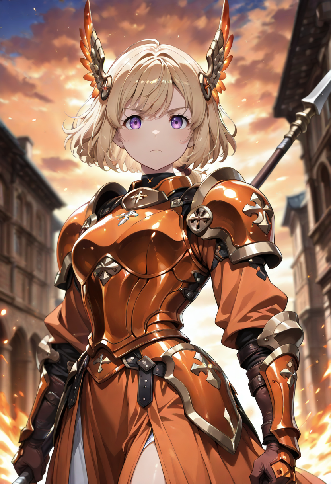
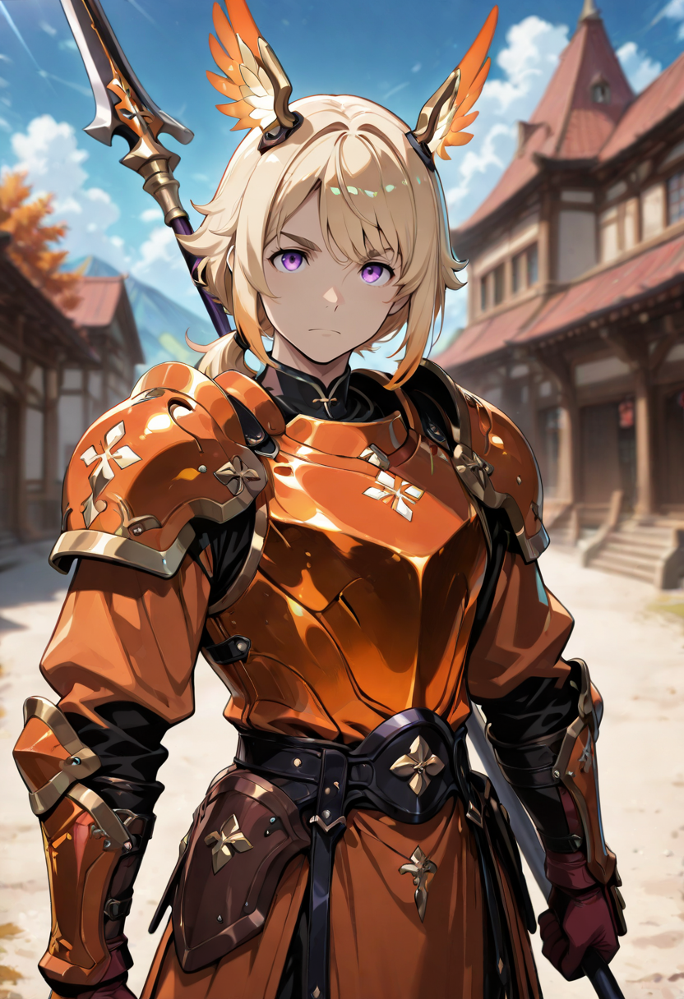

The Threshold
The Valkyrie Lancers occupy the same divine-military tradition as the Valkyrie Guardian of the Linfa branch, but where the Guardian understands her role as sustaining life, the Lancer understands hers as controlling territory. Her lance creates a boundary. On one side: the formation. On the other: everything that wants to get to the formation. The boundary is not symbolic. It is enforced, with lance, at a range that most melee units find uncomfortably long.
She was a divine lancer in a previous existence , one of the honor guards of celestial courts that operated on the principle that the divine needed protecting not from harm but from proximity to harm, and that the correct distance was one lance's length. She has retained this philosophy in undeath and applies it with complete consistency. She does not welcome enemies closer. She does not fight at short range. If an enemy gets close to her, something has already gone very wrong.
She is the sturdiest T4 Custodian unit and the one most suited to extended holding actions. The trade is agility: she is not quick on her feet, but she does not need to be. Her position is already chosen, and she is not planning to leave it.
Tactical Data
Lance Lunge
BaseDivine Charge
ActiveCelestial Endurance
PassiveGallery